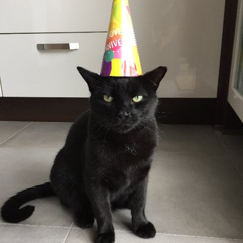

pepitothecat
 pepitothecat
pepitothecat
 pepitothehack
pepitothehack
Teléfono: Click aquí
Pepito es un verdadero experto a la hora de cazar pajaritos del patio exterior de su casa y alejar plagas de ratas de sus dueños. Le encantan las latas de atún, si le das una al día se portará muy bien y apenas arañará los brazos de sus familiares. Aunque no lo parezca es muy alegre y le gustan mucho los cumpleaños, eso si, a veces gruñe. Es muy activo, le gusta salir de casa por el día para tomar el sol, pero cuando se hace de noche vuelve a casa con su familia. Sin duda su actividad favorita es dormir 18 horas diarias.
Pepito es una celebridad de Internet, no dudes en contratarle para cualquier necesidad. Su cuenta de twitter está automatizada para que cuando sale de casa por su mini-puerta una cámara fija hace una foto y sube un twit indicando si ha salido o entrado de casa y a qué hora ha sido.
Tiene 12 años.
— Pépito (@PepitoTheCat) January 16, 2019
 Casa de Pepito
Casa de Pepito